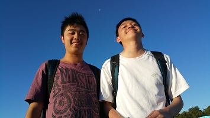

Gallery
Ceebs uploading images now
dont bother with them


Based upon a true story...
Two households, both alike in ATAR,
In fair Petersham, where we lay our scene,
From ancient grudge break to new mutiny,
Where civil blood makes civil hands unclean.
From forth the fatal loins of these two foes
A pair of star-cross'd lovers take their life;
Whose misadventured piteous overthrows
Do with their death bury their parents' strife.
The fearful passage of their death-mark'd love,
And the continuance of their parents' rage,
Which, but their children's end, nought could remove,
Is now the two hours' traffic of our stage;
The which if you with patient ears attend,
What here shall miss, our toil shall strive to mend.
Starring ARTHUR SZE AND WILL YANG

Ceebs uploading images now
dont bother with them